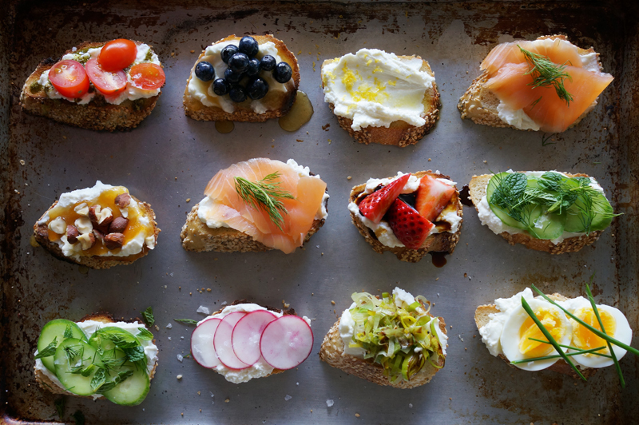
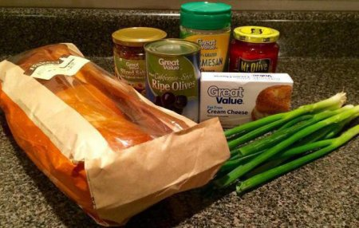
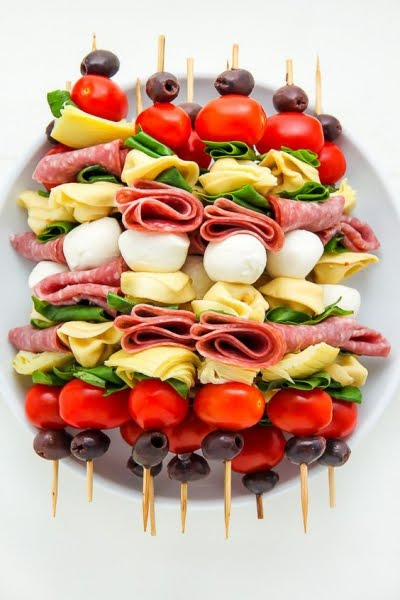

Бутерброд (від a нім. Butterbrot — хліб з маслом) — вид холодної закуски. Представляє собою скибочку хліба або булки, на яку покладені додаткові харчові продукти.
Для приготування їх використовують житній хліб — для бутербродів з жирними продуктами (шинкою, шпиком, салом), продуктами, що мають гострий смак (оселедцем, шпротами та ін.), і пшеничний хліб. Для відкритих бутербродів пшеничний батон нарізають скибочками, трохи навскіс, 1-1,5 см завтовшки і масою 30-40 г. Вершкове масло для бутербродів зачищають, тверде — розм'якшують і розтирають. Згідно з розкладкою у масло додають зелень петрушки, сік лимона, гірчицю, майонез, тертий хрін, сир.
Прості відкриті бутерброди готують з одного виду продуктів, наприклад бутерброд із маслом, із ковбасою, із сиром і т. ін.
Складні бутерброди асорті готують з набору декількох продуктів, які добре поєднуються за кольором та смаком. Продукти укладають так, щоб вони повністю покривали хліб. Для відкритих бутербродів продукти слід розміщувати так, щоб бутерброд було зручно їсти, основний продукт у поєднанні з супутнім повинен добре виділятися.
В якості основи для приготування закритих бутербродів часто використовують особливі булочки або формовий хліб, з якого зрізані скоринки. Перш ніж покласти на нього начинку, його намазують тертим хріном, майонезом, гірчицею, вершковим маслом або спеціальною пастою. Зверху розміщують сири, овочі, рибу, м'ясо або ковбасу. Все це накривають другим скибочкою хліба.
Крім звичайних сандвічів, є так звані закриті гарячі бутерброди. Їх готують за тим же принципом, але в самому кінці змазують збитим яйцем, обвалюють у панірувальних сухарях і обсмажують на сковороді, змащеній вершковим маслом. Щоб зберегти свіжість і м'якість такої закуски, її поміщають в супник і накривають кришкою.
Крім того, існують двох - і тришарові бутерброди. Вони бувають однокомпонентними і комбінованими. Для приготування останніх використовується декілька поєднаних між собою продуктів. Це може бути масло, яйця і шинка або оселедець.
Канапка (фр. canapé — скибка подовгастої булки (батону) намазана маслом з накладеними кусочками шинки, сиру, помідорів тощо, які складені, як подушки на дивані), накладанці, відкритий бутерброд — скибка свіжого чи підсушеного хліба, булки, може бути змащена різноманітними складниками (з вершкового масла, паштету, сиру, соусів, джему, варення, мармеладу), поверх якої викладена скибками чи шматочками різноманітна начинка (ковбаса, шинка, гриби, яйця, риба та морепродукти, сир, овочі, фрукти) та зелень (цибуля, часник, кріп, петрушка, коляндра (коріандр), листя салату,базилік, рукола, м'ята) та приправ. Канапки бувають з солодкою чи солоною начинкою. Солоні канапки можуть подаватися до столу гарячими чи холодними. Неодмінна страва святкового столу.
Миколу Коперника знають, в першу чергу, як великого астронома, механіка і математика. А адже він ще є і винахідником бутерброда. Тільки про це відомо не багатьом. Це сталося у 1520 році під час польсько-тевтонської війни.
30 серпня, до Дня сала і 23-річчя Дня незалежності України, ГК «Агровет Атлантик» приготувала найбільший в історії бутерброд із салом довжиною 150 м і встановила національний рекорд.